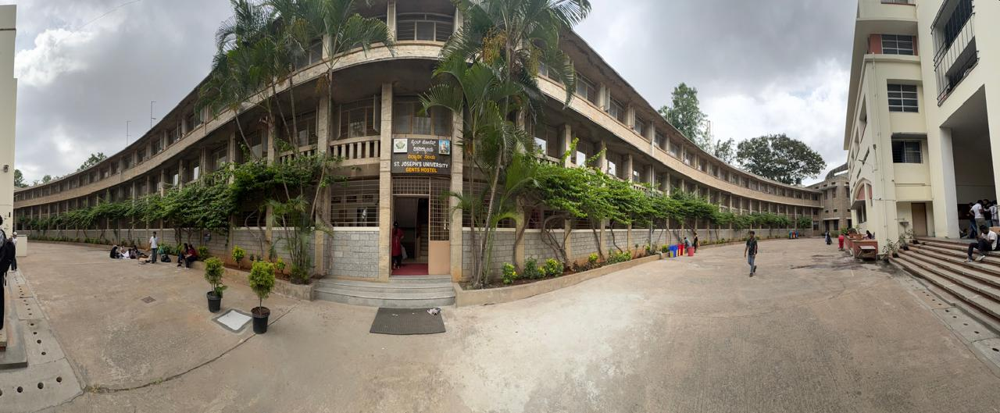

/*TEST*/

<!DOCTYPE html>
<html lang="en">

<head>

<meta charset="UTF-8">
<meta name="viewport"
content="width=device-width, initial-scale=1.0">

<title>Science Block</title>

<link rel="stylesheet"
href="../css/science.css">

<script src="https://aframe.io/releases/1.7.0/aframe.min.js"></script>

</head>

<body>

<!-- Loading -->

<div id="loader">

<div class="spinner"></div>

<h2>Loading Science Block...</h2>

</div>

<!-- Transition Video -->

<div id="videoContainer">

<video
id="transitionVideo"
playsinline
muted>

</video>

<div id="videoOverlay">

<h1 id="videoTitle">
Science Block
</h1>

</div>

</div>

<!-- Main -->

<div id="viewer">

<!-- Sidebar -->

<div id="sidebar">

<div class="sidebarHeader">

<h2>Science Block</h2>

<p>Panorama Locations</p>

</div>

<div id="locationList">

<div
class="location active"
data-id="entrance">


<span>Entrance</span>

</div>

<div
class="location"
data-id="corridor">


<span>Main Corridor</span>

</div>

<div
class="location"
data-id="physics">



<span>Physics Lab</span>

</div>

<div
class="location"
data-id="chemistry">


<span>Chemistry Lab</span>

</div>

<div
class="location"
data-id="computer">


<span>Computer Lab</span>

</div>

</div>

</div>

<!-- Panorama -->

<div id="panoContainer">

<a-scene
embedded
vr-mode-ui="enabled:true"
loading-screen="enabled:false">

<a-assets>


</a-assets>

<a-sky
id="sky"
src="#entrance">
</a-sky>

<a-camera
position="0 1.6 0"
look-controls="magicWindowTrackingEnabled:true">

<a-cursor
color="white">
</a-cursor>

</a-camera>

</a-scene>

</div>

</div>

<script src="../js/science.js"></script>

</body>

</html>
